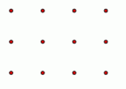

平面上摆放着一个n*m的点阵（下图所示是一个3*4的点阵）。Curimit想知道有多少三点组(a，b，c)满足以a，b，c三点共线。这里a，b，c是不同的3个点，其顺序无关紧要。(即(a，b，c)和 (b，c，a)被认为是相同的）。由于答案很大，故你只需要输出答案对1，000，000，007的余数就可以了。

有且仅有一行，两个用空格隔开的整数n和m。
有且仅有一行，一个整数，表示三点组的数目对1，000，000，007的余 数。（1，000。000。007是质数）
3 4
2 0
对于100%的数据，1< =N．m< =50000